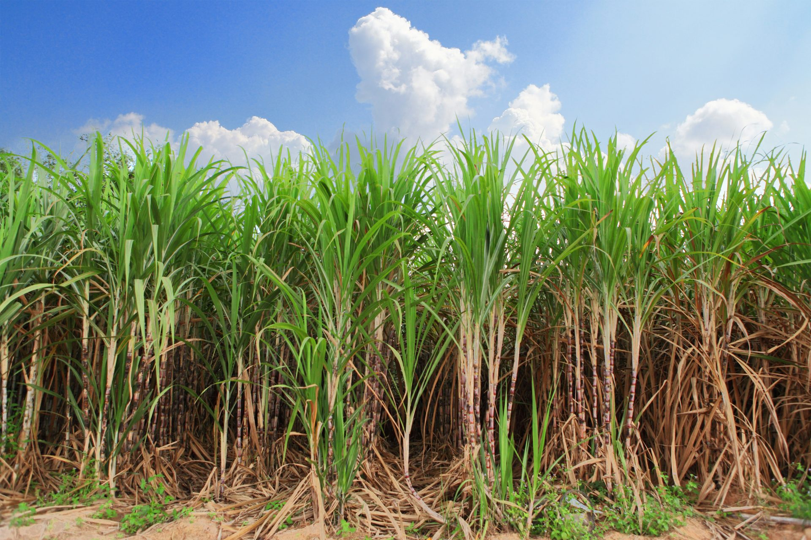

Cana de Açucar
A cana-de-açúcar é uma cultura de grande importância para a economia do Brasil, sendo um dos principais produtos agrícolas do país. Ela é cultivada em grande parte do território brasileiro, principalmente nos estados de São Paulo, Minas Gerais, Paraná, Goiás e Mato Grosso do Sul.

A cana-de-açúcar é utilizada na produção de açúcar e etanol, sendo que o Brasil é um dos principais produtores e exportadores desses produtos. A produção de açúcar e etanol a partir da cana-de-açúcar é uma importante fonte de geração de emprego e renda em diversas regiões do país.